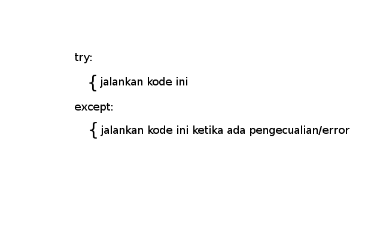
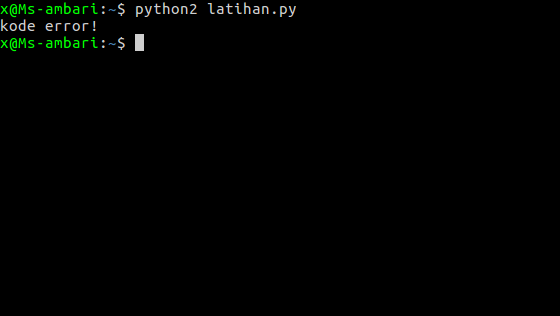
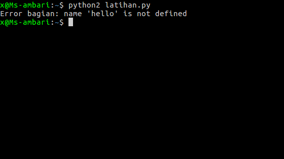

apa itu try..except di python? 
contoh dalam program:
try :
# jalankan code ini...
except :
# jalankan ini ketika ada pengecualian/error
Paham gak?
try :
print hello
except :
print "kode error!"
ini sebenarnya agak bodoh, hehe... kenapa?karena kita mencetak variabel 
tapi, bagaimana jika kodenya banyak? sedangkan kita tidak tahu di bagian mana ada error...
try :
print hello
except Exception as errornya:
print "Error bagian: " + str (errornya)
Hasilnya:

oke, sekian pembelajaran try..excention, semoga kamu sudah mengerti